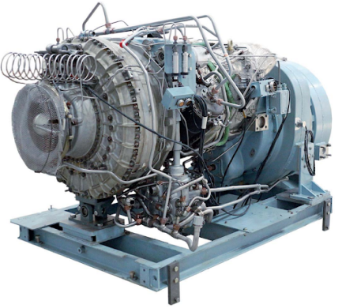
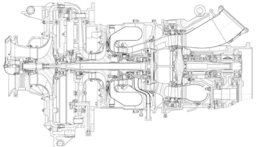

ТЕХНИЧЕСКИЕ ХАРАКТЕРИСТИКИ
газотурбинных электростанций ГТЭС МИГ Т800 на газообразном топливе

Модель генераторного агрегата
МИГ Т800
Тип привода
газотурбинный привод
Номинальное напряжение, кВ
0,4 (6,3/10 - опция)
Род тока
Переменный, 3ф.
Частота электрического тока, Гц
50
Номинальный коэффициент мощности при индуктивном характере нагрузки
0,8
Номинальная электрическая мощность, кВт
(при использовании в качестве основного источника электрической энергии)
800
Номинальная тепловая мощность1, кВт
1856
Электрический КПД, %
24,8
Общий КПД при рекуперации тепла выхлопных газов двигателя, %
до 86
Класс применения электростанции по ГОСТ 33115 (системы общего применения – освещение и прочие простые электрические нагрузки)*
G2
*Максимальный наброс/сброс нагрузки (% от номинальной мощности) при соблюдении параметров качества электроэнергии по ГОСТ 33115
25%
Из режима холостого хода изделие обеспечивает прямой запуск трехфазного асинхронного ненагруженного электродвигателя с короткозамкнутым ротором мощностью, кВт
200
Нижний предел минимальной электрической нагрузки (от номинальной мощности) без ограничения по продолжительности, %
0
Расход природного газа2 на нагрузке % номинальной
мощности, нм3/час
278
100%
225
175
75%
50%
Назначенный ресурс до капитального ремонта, час
25000
Межсервисный интервал, часов
4000
Назначенный ресурс установки, час
125000
Назначенный срок службы, лет
25
Степень автоматизации электростанции по ГОСТ 33105 - 2014
4 (четвертая)
Габаритные размеры: Д х Ш х В, мм
4240 х 1080 х 1595
Сухая масса: в комплекте поставки, кг
5000
Эксплуатационные условия
✓ интервал температур от минус 60 до
плюс 50 С
✓ относительная влажность воздуха до
98% при температуре плюс 25 С
✓ запыленность воздуха до 0,005 г/м3
✓ высота над уровнем моря – не более
1000 м
✓ дождь, иней, снег, туман, роса
1 Номинальная мощность обеспечивается при нормальных атмосферных условиях по ГОСТ Р 52200-2004 (ИСО 3977-2:1997):
атмосферном давлении 760 мм рт.ст., температуре окружающего воздуха 15 °С, относительной влажности 60 % и высоте
над уровнем моря Н=0 м
2 Для справки приведен номинальный расход топлива для природного газа по ГОСТ 5542-2014
СОСТАВ И ТЕХНИЧЕСКИЕ ХАРАКТЕРИСТИКИ
основного оборудования ГТЭС МИГ Т800
В качестве привода силового агрегата ГТЭС применяется конвертированный серийновыпускаемый двухкаскадный газотурбинный двигатель МСУ800 - современная высокотехнологичная модель.
В силу его конструктивных особенностей:
не требуется замены моторного масла и фильтров (нет трущихся элементов без подшипников)
не требуется воздушных фильтров (нет системы тонкой очистки)
нет необходимости в регулярной замене большого количества дорогостоящих свечей зажигания (используются только две
пусковые запальные свечи)
отсутствуют затруднения и ограничения запуска при низких температурах до - 60 ºС. При этом нагрузка принимается без
необходимости предварительного прогрева двигателя
Возможность применения на биогазе и свалочном газе, а также магистральном, сжиженном и компримированном
природном газе.
Свободная силовая турбина обеспечивает гибкость регулирования во всех диапазонах нагрузок,
ограждает от развития аварий при нештатных ситуациях с электрогенераторной установкой.
Количество циклов пуск/стоп не ограничено по условиям моторесурса.
Всё это в сочетании с большими межсервисными интервалами, малым объемом регламентных работ,
высокой надежностью и большим моторесурсом приводит к существенной экономии в процессе эксплуатации
и сервисного обслуживания установки.
Ключевые особенности конструкции:
✓ Высокопроизводительный двухступенчатый турбокомпрессор
✓ Тангенциальная камера сгорания
✓ Регулируемый сопловой аппарат
✓ Высокое совершенство кислотостойкой проточной части
✓ Механическая развязка силовой турбины от
турбокомпрессорного агрегата за счет газодинамической связи
✓ В качестве топлива может использоваться как природный газ,
так и биогаз, попутный нефтяной и свалочный газы
Модель двигателя
МСУ800
Тип двигателя
газотурбинный
Номинальная частота вращения силовой турбины до редуктора, об/мин
24687
Максимальная мощность двигателя, кВт (л.с.)
860 (1200)
Давление газообразного топлива на входе в установку, МПа (кгс/см2)
1,43 – 2,4 (14,3 – 24)
(избыточное)
Максимальный температурный диапазон газа на входе в двигатель, ºС
от -50 до +100
Рекомендуемая* температура газа на входе в двигатель, ºС
от +5 до +80
Степень фильтрации топливного газа не хуже, мкм
40
Максимальная влажность топливного газа: точка росы не выше, ºС
10
Расход воздуха на номинальной мощности, кг/с
3,7
Допустимое сопротивление воздушного тракта на входе в двигатель, мм в.ст.
100
Максимально допустимое сопротивление на впуске двигателя, мм в.ст.
(приводит к потере мощности двигателя)
500
Момент инерции силовой турбины, кг∙м2
0,102
Тепловая эмиссия с корпуса двигателя в окружающее пространство, %
от нагрузки
6-7
Выделение тепла на радиаторе маслоохладителя, кВт
40
Расход природного газа2 на нагрузке % номинальной
мощности, нм3/час
100%
4,5
75%
4,3
50%
3,85
Холостой ход
2,85
Температура отработавших газов (на режимах %
номинальной мощности), ºС
100%
465
75%
405
50%
380
Холостой ход
318
Допустимое противодавление выпуску отработавших газов без потери
мощности двигателя, мм в.ст.
145
Максимально допустимое противодавление выпуску отработавших газов с
потерей мощности двигателя, мм в.ст.
1000
Емкость расходного маслобака, л
30
Максимальный расход масла во всех режимах эксплуатации, г/кВт · час
0,09 - 0,11
Возможность ремонта на месте эксплуатации
замена агрегатов и модулей
Габаритные размеры: Д х Ш х В, мм
1914 х 1097 х 945
Сухая масса (в комплекте поставки с редуктором на 1500 об./мин.), кг
1036
Шум на расстоянии от источника (без устройств шумоподавления) 1 м / 10м, дБ
105 / 92
Показатели токсичности выхлопных газов на нагрузках 50/100% номинальной
О2, %
16,8 / 15
СО, %
3,1 / 3,8
CO2, мг/нм3
17 / 11
NОx, мг/нм3
149 / 257
Допустимая концентрация масел в газовом топливе не более, ppm
5
Максимально допустимый уровень H2S по массе, %
4
Содержание жидких фракций не более, ppm
3
Низшая теплотворная способность топливного газа не менее, МДж/кг
45
Суммарное содержание по массе углеводородов от С5Н12 и тяжелее менее, %
2
Основное масло
МС-8п ГОСТ 38.01163-78
Дублирующее масло (существуют аналоги)
МС-8РК ТУ 38.1011181-88
Межсервисный интервал – осмотр и внешние проверки (промывки), моточасов
4500 (8500)
*соблюдение данного диапазона позволяет исключить прохождение точки росы тяжелыми углеводородными фракциями нефтяного газа и конденсации паров влаги.
 